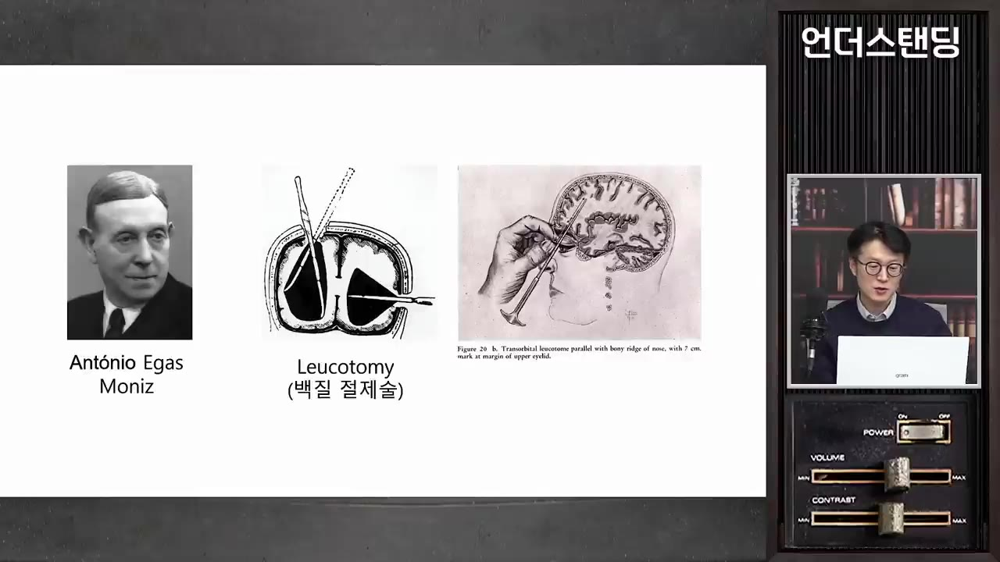
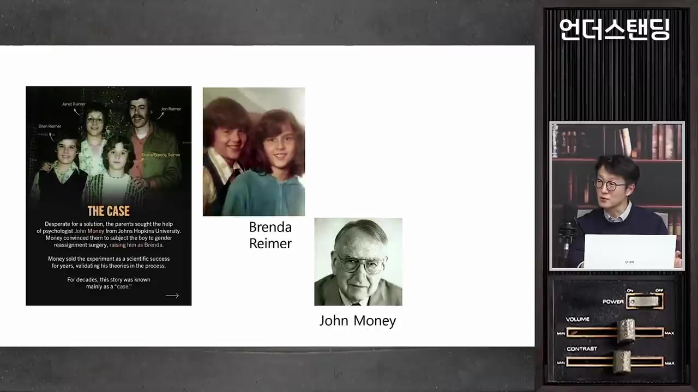
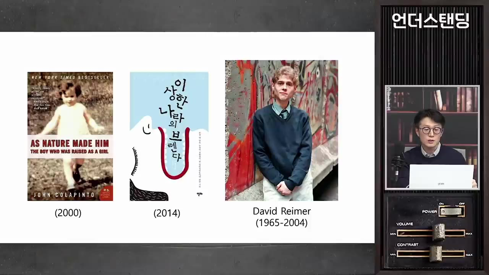

[과학 잔혹사 2부] 얼음송곳 뇌수술로 노벨상 받은 최악의 의사. 남자 아이를 강제로 여자로 바꾼 충격의 쌍둥이 실험
🎙️ 자막 대신 영상 음성을 받아써서 정리 (ko (음성 받아쓰기·GPU))
▶ 원본 영상 보기한눈에 보기
- 포르투갈 의사 에가스 모니스는 뇌 백질을 끊어 난폭한 환자를 '순하게' 만드는 수술로 1949년 노벨상을 받았지만, 환자들은 판단력·감정·인격을 잃었고 이 수술은 결국 금지됐다.
- 심리학자 존 머니는 "성 정체성은 양육으로 정해진다"는 자기 이론을 증명하려고, 포경수술 사고로 생식기를 잃은 남자아이를 여자아이로 키우게 하고 성공 사례라고 발표했다.
- 그 아이 데이비드 라이머는 평생 고통받다가 쌍둥이 형제가 죽은 뒤 38살에 스스로 목숨을 끊었고, 머니는 끝까지 잘못을 인정하지 않았다.
- 정우현 교수(『과학 잔혹사』)가 내린 결론은 네 가지다. 목적이 수단을 정당화하지 못한다, 전문가 권위를 그대로 믿지 않는다, 개인의 존엄과 자기결정권이 먼저다, 과학이 정상·비정상을 함부로 정하지 않는다.
- 진행자는 반대 시각도 내놓는다. 고속도로·반도체처럼 희생을 안고 굴러가는 문명 활동과 비난받는 실험의 경계가 생각보다 모호하다는 것이다.
이런 분께 도움이 됩니다
- 의학·과학 윤리, 전문가 권위를 어디까지 믿어야 하는지에 관심 있는 분
- '젠더'라는 말이 어디서 나왔는지, 성 정체성 논쟁의 역사적 배경을 알고 싶은 분
- 『과학 잔혹사』를 읽기 전에 핵심 사례를 미리 훑어보고 싶은 분
핵심 내용
결론: 과학은 인간을 위해 있다
- 정우현 교수가 잔혹한 생체 실험의 역사에서 끌어낸 교훈은 네 가지다. (31:00, 31:52, 32:01)
- ① 목적이 수단을 정당화하지 못한다: 한 사람만 희생하면 100만 명을 살릴 약이 나온다 해도 안 된다.
- ② 전문가 권위에 그대로 기대지 않는다: 과학자·의사의 주장을 계속 의심하고, 검증에 시민도 참여해야 한다.
- ③ 개인의 존엄과 자기결정권이 먼저다: 이것을 무시한 발전은 우리가 바라는 발전이 아니다.
- ④ 과학이 정상·비정상을 함부로 정하지 않는다: 정신질환 진단 기준(DSM, 미국정신의학회의 진단 편람)도 시대마다 바뀐다. 성전환도 예전에는 '질환'이었지만 지금은 '불편함' 정도로 용어가 바뀌었다.
💡 과학에는 무조건 따라야 할 권위가 없다. 기준은 계속 바뀐다.
에가스 모니스: 명성에 목마른 의사
- 포르투갈 리스본 출신 신경과 의사로, 빨리 유명해지고 싶어 26살에 정치에 들어가 의회 의원이 됐다. 정치에서 존경을 얻지 못하자 다시 의학, 그중 뇌 연구에서 '한 방'을 노렸다. (0:49)
- 1920년대 엑스레이는 뼈만 찍고 말랑한 뇌는 찍지 못했다. 그래서 모니스는 프랑스에서 나온 혈관 조영술(조영제를 넣어 혈관을 찍는 방법)을 처음으로 뇌에 써서 뇌출혈·뇌경색을 찾아냈다.
- 훌륭한 성과였지만 기술을 직접 개발한 것은 아니어서 노벨상 추천을 부탁하고 다녀도 받지 못했다. 그 사이 60세를 넘겼고 통풍에도 시달렸다.

- 명성 추구
- 뇌혈관 조영술
- 침팬지 세미나
- 사람에게 시술
- 미국으로 확산
- 노벨상 수상
- 부작용·금지
- 1명성 추구
26살에 정치에 들어갔으나 존경을 얻지 못하고 의학(뇌 연구)으로 돌아옴
- 2뇌혈관 조영술
혈관 조영술을 뇌에 처음 적용했지만 노벨상 추천은 받지 못함
- 3침팬지 세미나
전두엽 앞쪽을 떼어 낸 난폭한 침팬지 두 마리가 '순한 양'이 됐다는 발표를 들음 (2:34)
- 4사람에게 시술
수용소의 난폭한 환자·강력범의 두개골을 열고 알코올로 세포를 죽이다가, 나중에는 얼음송곳으로 백질을 긁어냄
- 5미국으로 확산
후계자들이 두개골을 열지 않고 눈구멍으로 송곳을 넣는 방법을 개발함
- 6노벨상 수상
총격을 당하고 살아남은 이야기를 내세워 9명의 추천을 받아 1949년에 수상
- 7부작용·금지
인지능력·감정·인격 상실이 드러나 수십 년 뒤 완전히 금지됨
백질절제술: 무엇을 잘랐나
- 수술 이름은 '류코톰'(leucotomy, 백질 절제술)이다. (3:33)
- 회색질은 대뇌 바깥쪽의 어두운 부분으로, 신경세포체가 모여 있다.
- 백질은 하얗게 보이는 부분으로, 신경 신호가 흐르는 축삭(전선 같은 역할)이 모여 세포끼리 연결한다. 삼겹살 기름처럼 하찮아 보여 잘라도 된다고 여겼지만 실제로는 중요한 부위다.
- 뇌에는 통각 수용체가 없어 긁어내도 아프지 않다. 다만 뇌를 둘러싼 막의 혈관에서는 피가 날 수 있다.
- 뇌는 결과를 예측하기 어렵다. 프랑스의 한 중년 공무원은 뇌가 보통 성인의 10%만 남아 있었는데도 직장·가정생활을 문제없이 했다는 보도가 있었다(영상 속 소개). (5:40)
💡 뇌는 가소성이 커서 '어디를 자르면 어떻게 된다'를 장담할 수 없다. 그런 기관에 송곳을 넣은 것이다.
미국 확산: 5만~10만 명이 시술받다
- 미국 후계자들은 눈꺼풀을 들어 올리고 눈구멍으로 꼬챙이를 넣어, 두개골을 열지 않고 거의 마취 없이 시술하는 방법을 만들었다(영상에서는 후계자 이름을 말하지 않음). (6:41)
- 2차 세계대전 뒤 전쟁 트라우마로 자기 통제가 안 되는 상이군인까지 포함해 5만~10만 명이 전두엽 절제 시술을 받은 것으로 추정된다. (7:10)
- 환자들은 하나같이 편안하고 유순해 보였고, 겉으로는 완치처럼 보였다.
노벨상 수상과 그 뒤에 드러난 부작용
- 시술받은 환자 한 명이 모니스에게 총 다섯 발을 쐈지만 모니스는 장애를 얻고 살아남았다. 그는 이것을 '좋은 일을 하고도 핍박받은 이야기'로 내세워 9명의 추천을 받았고, 1949년 노벨 생리의학상을 받았다. (7:39, 8:13)
- 부작용: 전두엽이 맡던 도덕성·의지·결단·계획 같은 고등 사고가 사라졌다. 환자들은 어린아이 같은 행동으로 퇴행했고 감정과 인격도 잃었다. (9:08)
- 수십 년 뒤 시술은 완전히 금지됐다. 그 사이 클로르프로마진·리튬 같은 약물치료가 시행착오를 거쳐 자리 잡았다.
- '최악의 노벨상'이라 불리지만 노벨상은 한번 준 상을 취소하지 않고 자진 반납도 받지 않는다. 사르트르처럼 수상을 거부해도 다른 사람에게 넘어가지 않는다.
💡 '겉으로 얌전해졌다'를 '나았다'로 착각한 것. 노벨상 심사의 큰 허점을 보여 준 사례다.
존 머니: '젠더'를 만든 심리학자
- 미국 존스홉킨스 대학의 성심리학 교수였다. 의사가 아닌 심리학자인데도 성전환 수술을 직접 집도하는 등 의사 역할을 했다. (12:14)
- 성 정체성은 그때까지 염색체·해부학적 기관·외부 생식기 같은 생물학적 요인으로 판단했다. 머니는 여기에 "내가 어떤 성이라고 느끼느냐"는 심리적 요인을 처음으로 넣었다.
- 그래서 생물학적 성(sex)과 구분되는 젠더(gender)라는 말을 만들었고, 이 말이 사회를 흔들며 명성을 얻었다. (13:00)
- 명성에 취해 개방결혼·나체주의·SM은 물론 소아성애까지 옹호하는 자극적인 주장을 쏟아냈다.
- 이론을 증명하려고 생식기가 모호하게 태어난 간성(intersex) 아이 130명을 모아 논문을 썼다. (14:20)
- 주장: 18개월 미만 아기는 성 중립 상태라서, 염색체와 상관없이 18개월까지 어떻게 키우느냐가 성을 정한다.
- 처방: 간성 아이는 빨리 여성으로 바꾸는 수술을 해야 한다(여성으로 만드는 수술이 기술적으로 더 쉬워서). 미루면 성 정체성 혼란으로 인생을 망친다.
쌍둥이 실험의 전말
- 1965년 캐나다 위니펙에서 일란성 쌍둥이 형제 브루스와 브라이언 라이머가 태어났다. 유전자가 똑같으니 한 명은 남자, 한 명은 여자로 자라면 머니의 이론을 증명할 완벽한 실험이 된다. (11:04)
- 포경수술 사고
- 존 머니 찾기
- 여자로 키우기
- 성공 선언
- 고통의 성장기
- 진실을 알게 됨
- 남자로 돌아감
- 배상과 결혼
- 파경과 비극
- 1포경수술 사고
생후 8개월 때 전기기구로 포경수술을 하다 실수로 생식기가 완전히 타 버림 (11:56)
- 2존 머니 찾기
부모가 TV 인터뷰를 보고 미국 존스홉킨스(미국 최초로 공식 성전환 수술을 한 병원)로 감
- 3여자로 키우기
성전환 수술 뒤 이름을 '브렌다'로 바꿈. 머리를 땋고 드레스·인형을 주고 에스트로겐을 주사함. 머니는 "남자였다는 걸 절대 말하지 말라"고 당부함 (17:32)

'THE CASE' 자료와 Brenda Reimer, John Money 사진 슬라이드 · ▶ 17:39 - 4성공 선언
7살 무렵 머니가 "완벽한 여성으로 자랐다"며 자기 이론의 성공 사례로 발표함
- 5고통의 성장기
어깨가 넓고 힘이 셌고, 앉아서 소변보기를 거부함. 사춘기에 가슴이 나오자 자살하겠다고 함
- 6진실을 알게 됨
15살 무렵 자살 소동 뒤 부모가 사실을 털어놓음. "그래서 내가 이랬구나"
- 7남자로 돌아감
유방절제술을 받고 에스트로겐을 끊음. 1980년대 허벅지 근육으로 성기를 재건하고 고환은 플라스틱 모형으로 만들었지만 감염·요도 질환에 시달림
- 8배상과 결혼
포경수술 의사를 총을 들고 찾아갔다가 사과를 받고 돌아섬. 약 17만 달러(영상 추산 지금 돈 약 8억 원)를 받음. 미혼모와 결혼했고, 약 10년 뒤 갈비뼈 연골로 재건 수술을 다시 받음
- 9파경과 비극
결혼생활에 지나치게 집착하다 파경. 부모 관심에서 밀려 비행·마약·알코올 중독을 겪던 쌍둥이 브라이언이 자살하자, 데이비드도 38살에 권총으로 생을 마감함
- 30년 뒤인 1995년 BBC 방송이 '브렌다는 여자로 성공적으로 자라지 못했다'고 폭로해 사기극이 드러났다(영상 속 연도).
- 이야기는 책 『As Nature Made Him』으로 나왔고, 한국에는 『이상한 나라의 브렌다』로 출간됐다.

- 데이비드의 자살이 보도된 뒤, 머니에게 여성 전환 수술을 받은 다른 환자들도 "나는 여성이라고 생각한 적이 없다"고 나섰다.
- 머니는 끝까지 자기 잘못이 아니라고 부인했다.
💡 한 전문가의 확신과 명성이 한 사람(그리고 그 가족)의 인생 전체를 무너뜨렸다.
오늘의 시각: 자기결정권과 성의 스펙트럼
- 이 사례를 근거로 "성은 생물학적으로 정해지니 바꿀 수 없다"고 강조하는 사람도 많다. 하지만 정 교수는 이 사례가 완전한 성을 가졌다가 잃은 경우라는 점을 짚는다. (23:50)
- 생식기가 모호하게 태어난 아이는 성을 정해 줄 필요가 있을 수 있다. 다만 지금은 응급 상황이 아니면 부모나 의사가 정하지 않고, 아이가 스스로 결정할 수 있을 때까지 기다리는 쪽으로 바뀌고 있다. (24:25)
- 성은 둘로 딱 나뉘기보다 0(여자)~10(남자) 사이의 스펙트럼이다. 남자라고 모두 10이 아니고, 나이 들며 호르몬이 바뀌면 점수도 바뀐다는 것이 정 교수의 시각이다. (25:02)
- '테토녀·에겐남' 같은 말이 장난스럽게 쓰이지만, 두 가지 범주로는 사람의 속마음을 다 담지 못하니 다양한 이름이 생기는 것을 긍정적으로 본다.
전문가의 양심에 기대는 시스템의 한계
- 진행자 시각: 머니를 포함한 이 의사들은 "한 사람을 희생해 수만 명을 구하는 건 옳다"고 스스로를 합리화했을 것이다. 호기심 많은 의학자의 시도가 있어야 의학이 발전하는 것도 사실이다. (27:43)
- 정 교수는 한나 아렌트의 '악의 평범성'(『예루살렘의 아이히만』)을 꺼낸다. 악은 누가 봐도 악한 의도가 아니라 "시켜서", "좋은 뜻으로"라는 평범한 생각에서 나올 수 있다. 전문가에게 이런 발상이 생기면 특히 위험하다. (29:02)
- 진행자가 들은 일화(전해 들은 이야기): 로봇 수술 논문을 쓰려는 교수가 일반 수술 환자에게 진통제·항생제를 더 쓰게 해서 로봇 수술이 덜 아프다는 결과를 만들었다고 한다. (29:54)
- 편향된 사람들만 모으면 원하는 논문을 얼마든지 만들 수 있다. 논문은 결국 학자의 양심에 기대고 있고, 황우석 사태도 그래서 나왔다.
반론: 문명도 누군가의 희생 위에 있다
기억할 숫자·인용
| 항목 | 내용 |
|---|---|
| 26살 | 모니스가 포르투갈 의회 의원이 된 나이 |
| 5만~10만 명 | 미국 등에서 전두엽 절제 시술을 받은 것으로 추정되는 사람 수 |
| 5발 / 9명 | 모니스가 환자에게 맞은 총알 수 / 노벨상 추천인 수 |
| 1949년 | 모니스 노벨 생리의학상 수상 |
| 1965년, 생후 8개월 | 라이머 쌍둥이 출생, 포경수술 사고 |
| 130명 / 18개월 | 머니가 모은 간성 아이 수 / '성 중립' 상태라고 주장한 나이 |
| 7살 / 15살 | 머니의 '성공' 선언 무렵 / 진실을 알게 된 무렵 |
| 1995년 | BBC 폭로(영상 속 연도) |
| 약 17만 달러 | 데이비드가 받은 배상금(영상 추산 지금 돈 약 8억 원) |
| 38살 | 데이비드 라이머가 세상을 떠난 나이 |
- "과학이 인간을 위한 것이지, 인간이 과학을 위한 것이 아니다." — 정우현 교수
- "과학에는 따라야 할 권위라는 것은 사실 없다." — 정우현 교수
생각해볼 점
- 영상 속 사실관계는 원문으로 확인해 볼 것: 대담 형식이라 연도·금액·추천인 수 같은 세부 수치는 말로만 나왔다. 특히 BBC 폭로 연도(1995년)와 배상금 환산액은 다른 자료와 대조해 볼 필요가 있다. 로봇 수술 논문 일화는 진행자가 전해 들은 이야기라 사실로 단정할 수 없다.
- 성의 스펙트럼, 자기결정권 논의는 정 교수의 견해: 간성 아이의 수술 시점이나 성 정체성을 어떻게 볼지는 지금도 의학·윤리·사회적으로 논쟁 중인 주제다. 영상은 한쪽 관점을 비교적 분명히 제시한다.
- 진행자 반론의 가치(내 의견): 고속도로·반도체 비유는 '동의 없는 개인 대상 실험'과 '사회가 감수하기로 합의한 위험'을 구분하지 않아 그대로 같다고 보기는 어렵다. 다만 "희생을 어디까지 받아들일지 누가 정하느냐"는 질문은 두 경우 모두에 남는다.
바로 해볼 일
- 『과학 잔혹사』나 『이상한 나라의 브렌다』(원제 『As Nature Made Him』) 중 하나를 읽을 목록에 넣는다.
- 최근 본 건강·의학 기사 하나를 골라 "연구 대상은 누구였나, 누가 돈을 댔나, 다른 연구도 같은 결과인가"를 확인해 본다.
- "더 많은 사람을 위해 한 사람의 희생이 허용되는가"에 대한 내 생각을 한 문단으로 적어 본다.